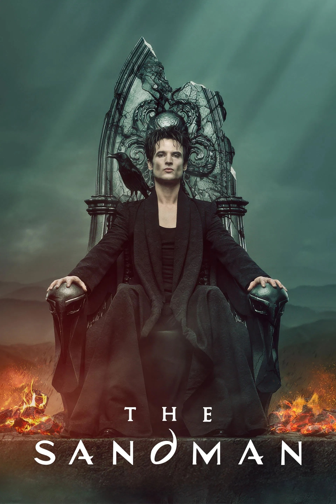
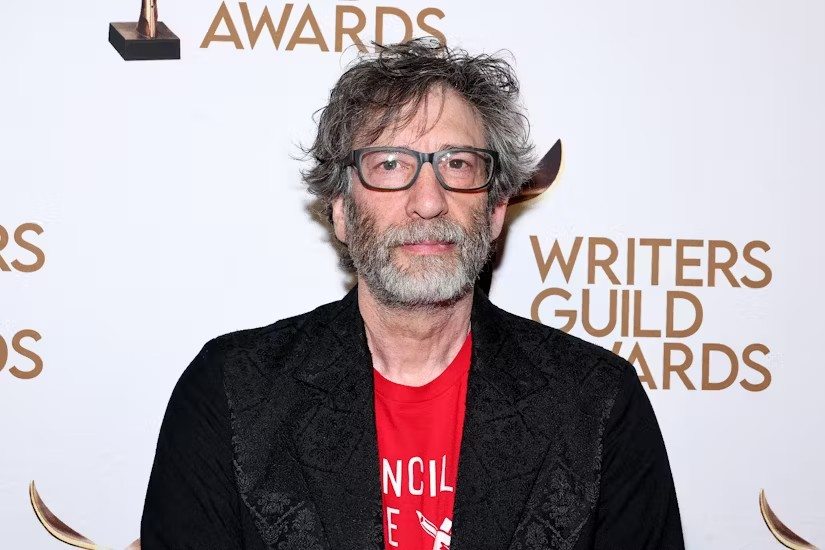
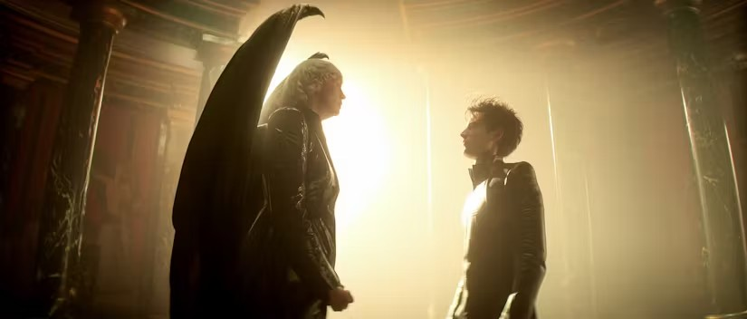

The Sandman Is Officially Ending After 2 Seasons

Once upon a time, The Sandman seemed to be Netflix's heir apparent to Stranger Things. The mythical fantasy series based on Neil Gaiman's hit comics had an all-star cast and franchise potential, and while it's been three years since Season 1, fans are still waiting with bated breath to see what's next.
Now, it turns out the answer is not much, as Netflix announced that Season 2 will also be the last. This may have been the plan all along, but the horrific allegations against Neil Gaiman, as reported by Vulture last month, are impossible to ignore, and studios have reacted accordingly.

"The Sandman series has always been focused exclusively on Dream's story, and back in 2022, when we looked at the remaining Dream material from the comics, we knew we only had enough story for one more season," showrunner Allan Heinberg said. "We are extremely grateful to Netflix for bringing the team all back together and giving us the time and resources to make a faithful adaptation in a way that we hope will surprise and delight the comics' loyal readers as well as fans of our show."
While this reasoning may be true, this is also the latest Gaiman project to get cut short after multiple allegations of sexual assault were made against the author. Good Omens, perhaps the biggest Gaiman series adaptation, is ending with a single feature-length special in lieu of a third season, and Gaiman has already stepped away from his role as writer and showrunner. Dark Horse Comics, the publisher of many of Gaiman's comics, has cut ties with him, and a planned musical adaptation of Gaiman's Coraline has been scrapped.

The Sandman was one of Gaiman's highest-profile projects, and its cancellation proves that the response to recent reporting is suitably serious. If Heinberg's reassurances that they had a two-season plan all along is accurate, then Season 2 will hopefully provide a proper conclusion to the story that began three years ago. Fans looking for Netflix's next big multi-season franchise will have to look elsewhere, but there's no getting around the fact that continuing the show would be interpreted as standing behind Gaiman.